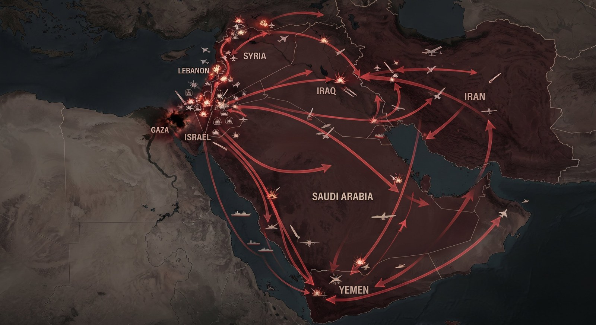

Imagen: generada con Inteligencia Artificial
No hay eventos que ocurran en el vacío. Todo lo que sucede tiene detrás una combinación de factores subyacentes, históricos, estructurales y coyunturales. Pero hay eventos que, por sus características y dimensión, activan, como efectos en cadena, otros eventos y dinámicas. Esto es lo que sucede a partir del 7 de octubre de 2023. Tanto los efectos que vive Israel ese día por los ataques terroristas de Hamás y la Jihad Islámica, como las decisiones que toma para responder, no solo impactan en Gaza, sino que terminan conectándose, desde el 8 de octubre, con Líbano, Siria, Irak, Yemen, Irán y, en general, con toda la región y más allá. Esto no significa, por ejemplo, que Israel e Irán no se hubiesen enfrentado sin los hechos del 7 de octubre; es imposible saberlo. Pero sí significa que esos ataques encienden o aceleran dinámicas que no solo terminan inescapablemente entretejidas, sino que producen efectos globales cuya dimensión no podíamos anticipar.
Un análisis así necesita hacerse por capas y niveles. En la primera están las implicaciones para Israel, Gaza y la población palestina en general. Sin que este sea el objeto del texto, basta decir que, pese al cumplimiento parcial de la primera fase del cese al fuego negociado por Trump en 2025, se trata de eventos aún en desarrollo. Hamás mantiene el control material de la Franja y ha reconstituido sus filas. Israel sigue ocupando el 60% de Gaza y el gobierno actual no acepta los términos para avanzar a las siguientes etapas del acuerdo. La crisis humanitaria no ha terminado y, ante las acusaciones de crímenes de guerra y genocidio que se procesan en cortes internacionales, la posición política de Israel en el ámbito internacional es cada vez más frágil. Ya hemos escrito muchos textos sobre todo esto. Hoy me concentro en las conexiones entre esta y otras arenas regionales, especialmente por la dimensión global que han adquirido.
Hezbollah y Líbano
1. Hezbollah es una organización político-militar libanesa aliada de Irán, al igual que Hamás y la Jihad Islámica. Su incorporación a las ofensivas contra Israel, desde el 8 de octubre, se produjo inicialmente mediante ataques destinados a obligar al ejército israelí a movilizar tropas hacia la frontera con Líbano y a forzar el desplazamiento de decenas de miles de israelíes de las zonas fronterizas, pero sin provocar una respuesta israelí que desencadenara una guerra mayor en el frente libanés.
2. Sin embargo, esta estrategia funcionó solo durante algunos meses. Las hostilidades escalaron en agosto y septiembre de 2024, e Israel demostró en pocas semanas que su inteligencia y aparato de seguridad habían desarrollado planes para golpear contundentemente a Hezbollah. Mientras las víctimas civiles y el número de desplazados en Líbano aumentaban considerablemente, los daños al liderazgo y la infraestructura de Hezbollah fueron enormes y se percibieron en Israel como fatales. Esto se debió, en particular, a que las ofensivas permitieron a Israel ocupar zonas de seguridad dentro de Líbano y no provocaron el involucramiento de Irán en la defensa de su principal aliado.
3. En efecto, el entonces líder supremo de la Revolución Islámica iraní, el ayatola Alí Khamenei, prefirió evitar una escalada con Israel en 2024, pese al asesinato de Nasrallah, líder de Hezbollah. Esto tuvo consecuencias posteriores, pues Jerusalén interpretó la indisposición de Teherán a escalar el conflicto como otro síntoma de debilidad.
4. Lo anterior también tuvo repercusiones en Siria, dado el papel de Hezbollah como pilar defensivo del régimen de Assad, junto con Irán y Rusia. La fragilidad de Hezbollah tras sus enfrentamientos con Israel no fue el único factor que contribuyó a la caída de ese régimen, pero sin duda fue uno de ellos.
5. El error de Israel, sin embargo, consistió en subestimar la resiliencia y las capacidades remanentes de Hezbollah. Cuando Trump y Netanyahu lanzaron ya en 2026 su mayor ofensiva contra Irán, Hezbollah se sumó a la defensa de su principal aliado con misiles y drones que causaron serios problemas a Israel. Esto llevó a Netanyahu a prolongar la guerra en Líbano buscando lograr el desarme completo de Hezbollah, algo que aún no se ha materializado y que mantiene abierto el potencial de una nueva escalada.
Además de la expansión del conflicto hacia Líbano, otros actores del eje proiraní, como las milicias que operan en Irak, también se sumaron a las ofensivas contra Israel. Por ahora, sin embargo, me concentro en el frente yemení.
Los hutíes
1. El grupo rebelde yemení de los hutíes, que controla la capital de ese país desde 2014, es otro importante aliado de Irán. La organización también se sumó a la causa de Hamás y la Jihad Islámica mediante ataques con misiles y drones contra Israel, que comenzaron en octubre de 2023.
2. Pero, además, los hutíes, que se asumen como una organización con suficiente independencia de Irán, entendieron que su posición geográfica y sus características podían otorgarles un lugar especial en la narrativa global, como líderes de una lucha contra el colonialismo occidental y a favor de la causa palestina.
3. Por tanto, también desde 2023, los hutíes aprovecharon el impacto que podían ejercer sobre la navegación comercial y lanzaron una campaña de ataques y secuestros contra embarcaciones que circulaban por el mar Rojo, que tuvieran cualquier tipo de vínculo con Israel y, posteriormente, con el comercio occidental en general.
4. Esto activó, a partir de 2024, una serie de operativos de EE. UU. y sus aliados contra la agrupación yemení, a los que se sumaron los ataques directos de Israel contra su infraestructura y su liderazgo en Yemen.
5. Pero los hutíes resistieron y, en 2026, cuando comenzó la guerra de mayor escala contra Irán, decidieron sumarse a su defensa. Primero lo hicieron mediante ataques esporádicos contra Israel, pero más adelante emprendieron una campaña abierta y de gran escala que terminó por reactivar la guerra civil en Yemen y, con ella, la confrontación directa entre los hutíes y Arabia Saudita.
6. Hoy, el frente yemení es uno de los más activos de Medio Oriente; amenaza las exportaciones de petróleo saudí y, en general, la navegación comercial a nivel global. Además, los hutíes constituyen, en este momento, una de las principales cartas de negociación con las que cuenta Teherán.
Irán
1. El tema de Irán está presente desde el mismo 7 de octubre. Hamás esperaba que Teherán se sumara de inmediato a la ofensiva, a pesar de que no le había informado de los detalles ni de la fecha de sus ataques contra Israel. Pero Irán decidió esperar. Uno de los factores que lo explican es la aversión al riesgo que exhibía el ayatola Alí Khamenei. Su estrategia para combatir a Israel siempre fue de largo plazo y mediante ataques de baja intensidad, evitando, en la medida de lo posible, una escalada directa.
2. Sin embargo, a medida que pasaron los meses, Israel se mostró cada vez más dispuesto a correr riesgos, incluidos aquellos que implicaran víctimas civiles o consecuencias políticas en países de la región. Paralelamente, Israel estimó que el ayatola seguía intentando evitar la confrontación. Esto lo llevó a intensificar sus ofensivas no solo contra los distintos aliados iraníes ya mencionados, sino también contra el propio Irán. La escalada derivó en dos rondas de ataques mutuos entre Jerusalén y Teherán en 2024 y, posteriormente, en la “Guerra de los Doce Días”, en junio de 2025, contra las instalaciones nucleares y el liderazgo iraní, lo que terminó por involucrar a EE. UU. en los bombardeos.
3. La conclusión que sacaron tanto el aparato de seguridad israelí como Trump y su círculo de todos estos acontecimientos fue que Irán estaba buscando evitar a toda costa una confrontación de mayor envergadura. O bien, que si optaba por enfrentarse simultáneamente a EE. UU. e Israel, sería derrotado rápidamente y el régimen colapsaría de inmediato, sobre todo si se eliminaba al líder supremo y a su círculo cercano.
4. No obstante, y sin ahondar más en ese tema, la eliminación de un ayatola averso al riesgo dejó al frente de Irán a dirigentes marcados por la desconfianza, conscientes de sus múltiples capacidades asimétricas y determinados a pagar los costos que implicaba un escalamiento, y así, implementaron una estrategia de defensa planeada desde hacía mucho tiempo. Esto ha tenido repercusiones financieras, económicas, psicológicas y políticas que no solo terminaron por impedir la victoria contundente que Trump y Netanyahu buscaban, sino que probablemente han fortalecido, hasta el momento, la posición iraní frente a la debilidad que se le atribuía hace un año.
Como dije al inicio, estamos ante eventos que siguen en desarrollo. Lo que hoy no puede quedar fuera del análisis es la magnitud de la expansión del conflicto desencadenado el 7 de octubre de 2023 y su interconexión con muchas otras arenas que, independientemente del cese al fuego parcial entre Hamás e Israel, siguen al rojo vivo.
CIPMEX · Centro de Investigación para la Paz México, A.C. · Paz que se piensa, paz que se construye